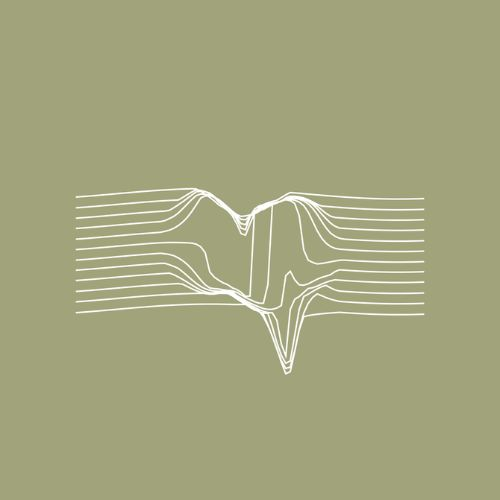

→ Leylines
A browser-based playful synth. Place invisible stones in the flow to trigger tones and pulses that feel alive.
Generative music, systems, and sound design
Human Motives explores how generative systems, modular synthesis, and chance operations create sounds that still feel deeply human. I release music, experiments and collaborations.
A selection of current and ongoing work and releases.
A browser-based playful synth. Place invisible stones in the flow to trigger tones and pulses that feel alive.
Ambient pieces built from modular sketches and coastal field recordings that blur tides, memory, and resonance.
A fun little step sequencer where simple glyphs define pitch, rhythm and modulation.
Slow-evolving ambient pieces combining physical modeling textures with melodic fragments.
Writing, thoughts, and behind-the-scenes process from my Substack.
Human Motives is the artist name of Chris van der Linden, designer, creative and musician from the Netherlands. An ongoing practice in modular synthesis, generative composition, coding and design.
The focus is on clarity, repetition, and slow change. Some projects become full releases, others live as sketches, Substack articles, or online experiments that invite you to listen and play differently.
Releases live on Bandcamp, streaming platforms, and occasionally as small physical editions.